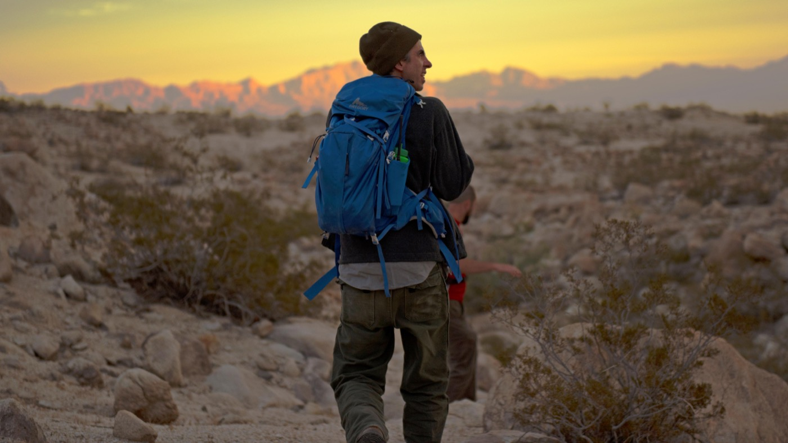

A glimpse of hiking
This short National Park Service video introduces hiking as a way to experience the outdoors. Use the player controls to start, pause, and adjust playback.
Open the video player directly or visit the National Park Service hiking article.
Video summary: This 46-second National Park Service clip highlights the benefits of hiking as a way to get outdoors and spend time in nature.
For related information in text, visit the NPS Benefits of Hiking page.
Views from the trail
This gallery pairs hiking photographs with descriptions and source credits. These are National Park Service images, rather than photographs from my own trips.

